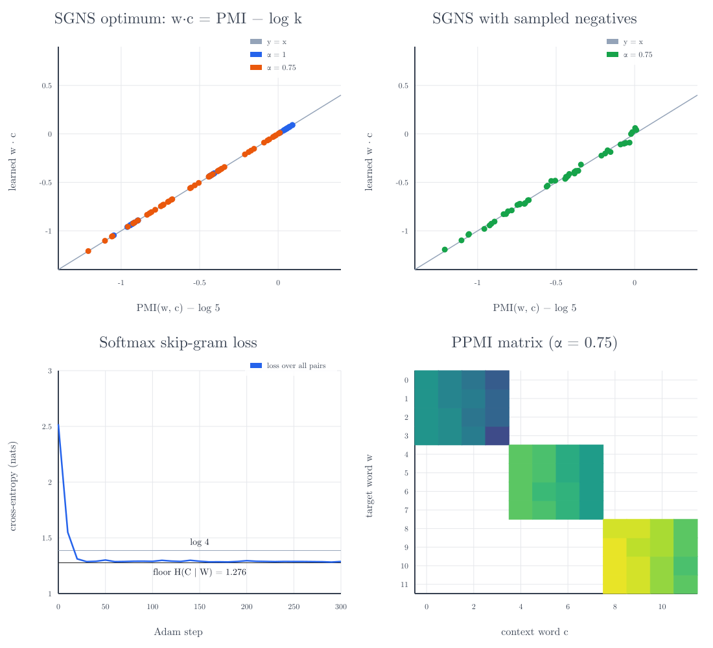
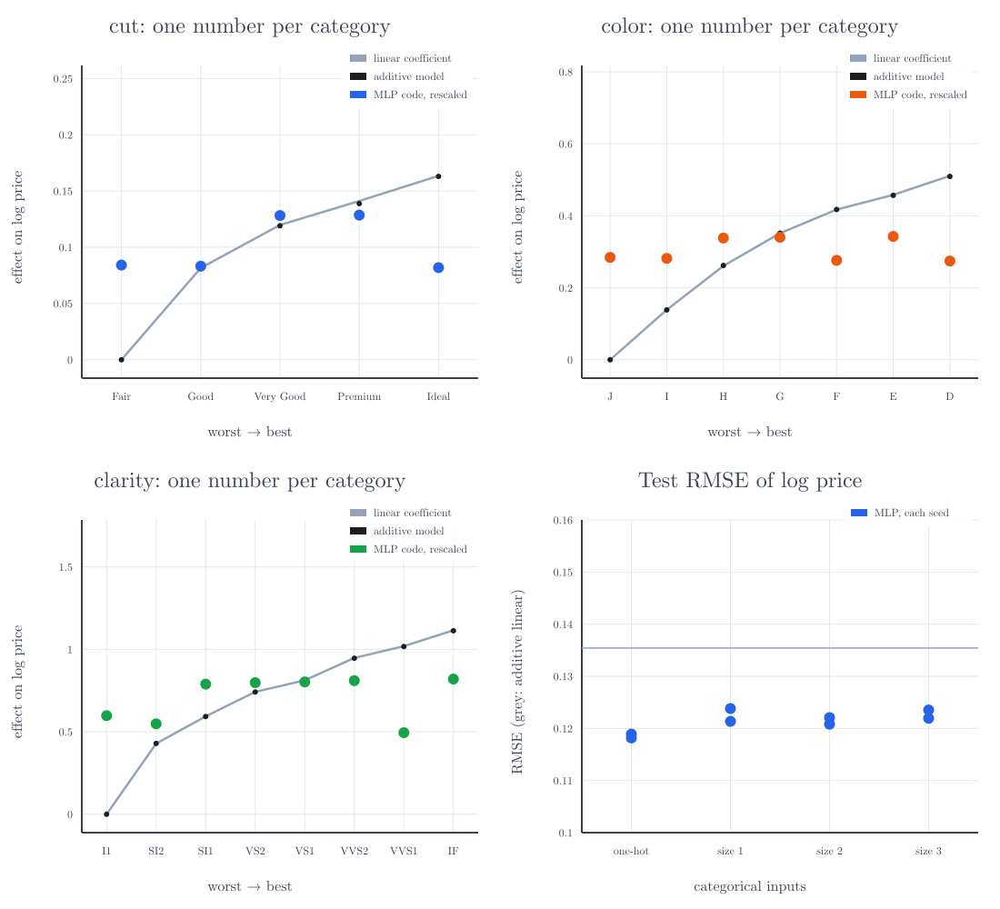

Embeddings: Lookups, Bags, PMI and What the Codes Mean
Abstract
An embedding layer stores one learned vector per token and looks it up by id. This report checks that the lookup equals a one-hot matrix product and that its gradient touches only the rows that were used, adding up over repeats. It checks that padding is pooled away
correctly, and that the new nn::embedding_bag gives the same pooled vectors without padding. For skip-gram with negative sampling, it derives and verifies the result of Levy and Goldberg (2014). Minimising the exact objective over full-rank embeddings
gives \(w\cdot c=\mathrm{PMI}(w,c)-\log k\) on every co-occurring pair to within \(5\times10^{-6}\), with and without word2vec's context smoothing. Training with sampled negatives gives a correlation of 0.998 with the same target. The softmax skip-gram reaches
within 0.011 nats of its exact floor, the conditional entropy of the corpus. On 53940 diamonds, embeddings of cut, colour and clarity let a network beat an additive linear model. The one-number codes it learns, however, ignore the obvious quality order, while the same
codes in an additive model recover the linear coefficients to a correlation of 0.9999.
The problem
Words, products, users and categories are discrete. A neural network sees them through an embedding table \(E\in\mathbb R^{V\times d}\): token \(v\) becomes row \(E_v\). The table is trained like any other weight, and the rows end up arranged so that tokens which behave alike are close. Three questions are worth answering exactly. What does the lookup do to gradients? What do trained word vectors encode? And are the learned codes meaningful, or just convenient for the rest of the network?
This report replaces the original example examples/nn/0_foundations/0.2_reusable_layer_library/embedding.cpp. That example showed the one-hot equivalence and the sparse gradient, pooled padded sequences with a masked mean, and trained a softmax skip-gram on a
synthetic corpus whose words come in topics. All three are kept here. The theory of negative sampling and pointwise mutual information is added, together with an experiment on categorical features.
The method
Lookup, gradient and pooling
For ids \(i_1,\dots,i_n\) the lookup returns \(E_{i_1},\dots,E_{i_n}\). Stacking one-hot rows \(e_{i_t}^\top\) into \(H\in\{0,1\}^{n\times V}\), this is \(HE\). If \(r_t=\partial L/\partial E_{i_t}\) is the upstream gradient at position \(t\), then
so rows that were not looked up get zero gradient, and a repeated id accumulates. Sequences of different lengths are padded with a reserved id. The pad's row is a learned vector like any other, so pooling must exclude it, for example with a masked mean. nn::embedding_bag
avoids padding altogether. It takes the ids of all bags concatenated, with the offset at which each bag starts, and returns their sum, mean (optionally weighted) or elementwise maximum. When an embedding feeds a dense layer, \(E_vW=e_v^\top(EW)\). The pair is
therefore a dense layer on one-hot inputs whose weight block \(EW\) has rank at most \(d\).
Counts and pointwise mutual information
Let \(\#(w,c)\) count how often context word \(c\) appears within a window around target word \(w\), with row sums \(\#(w)\) and column sums \(\#(c)\) (nn::cooccurrence_matrix). The pointwise mutual information (Church and Hanks, 1990) compares the
observed pair frequency with independence:
With \(\alpha=1\) this is \(\log\frac{P(w,c)}{P(w)P(c)}\). The smoothing \(\alpha=0.75\) raises the probability of rare contexts and so lowers their PMI (Levy, Goldberg and Dagan, 2015). Pairs never seen have \(\mathrm{PMI}=-\infty\). The positive PMI \(\max(\mathrm{PMI},0)\) is a classical sparse word
representation (nn::pmi).
Skip-gram with negative sampling
Word2vec's SGNS (Mikolov et al., 2013) learns target vectors \(w\) and context vectors \(c\). For every observed pair it draws \(k\) negative contexts from \(P_\alpha\) and minimises \(-\log\sigma(w\cdot c)-\sum_j\log\sigma(-w\cdot n_j)\) (nn::negative_sampling_loss, with
negatives from nn::sample_negatives). Summing over the corpus and taking the expectation over negatives, the objective is \(-\sum_{w,c}\ell_{wc}(x_{wc})\) with \(x_{wc}=w\cdot c\) and
If the dimension is large enough for each \(x_{wc}\) to be set freely, each term can be optimised alone. Since \(\frac{d}{dx}\log\sigma(x)=1-\sigma(x)\), setting the derivative to zero gives \(\#(w,c)(1-\sigma(x))=k\#(w)P_\alpha(c)\sigma(x)\), so
SGNS thus factorises the shifted PMI matrix (Levy and Goldberg, 2014). With fewer dimensions it finds a weighted low-rank approximation, and pairs that never occur are pushed towards \(-\infty\).
The original example trained a skip-gram with a full softmax over contexts instead. Its loss \(-\frac1D\sum_{w,c}\#(w,c)\log\operatorname{softmax}(x_w)_c\) is a cross-entropy between the empirical conditional \(P(c\mid w)\) and the model. By Gibbs' inequality it is at least
with equality when the softmax reproduces \(P(c\mid w)\). Here \(D\) is the number of pairs.
Codes for categorical features
A categorical feature with \(L\) levels can enter a regression as one-hot columns, or through an embedding of size \(d\) (Guo and Berkhahn, 2016). In an additive model \(y=ax+\sum_fv_f\,e_f(\text{level})+b\) with \(d=1\), the product \(v_fe_f\) of a level's code and its weight is that level's effect. It is identified up to the reference level, and gradient descent must reproduce the least-squares coefficients. In a network with hidden layers nothing forces this. Distinct codes in any order can be untangled by the layers above, so the codes need not mean anything on their own.
Simple examples
Lookup, sparse gradient, masking and bags
The program builds a table with 10 rows of size 4 and looks up ids \([[3,7,3],[0,9,7]]\). It compares the result with the one-hot product, and the gradient of \(L=\sum e\odot r\) with the hand sum. It then pools two padded sequences (pad id 0) with a masked mean and with
nn::embedding_bag on the unpadded ids.
#include <dm/dm.hpp>
namespace nn = dm::nn;
using nn::Tensor;
const auto F64 = nn::DType::Float64;
int main() {
// 1. A table [vocab 10, dim 4] and ids [2, 3]: the lookup is a one-hot product, and its gradient is sparse.
nn::ParameterStore p(1, F64);
const Tensor ids = nn::from_vector(std::vector<std::int64_t>{3, 7, 3, 0, 9, 7}, {2, 3});
const Tensor r = nn::reshape(nn::arange(0, 24, 1, F64) * 0.25 - 3.0, {2, 3, 4}); // upstream gradient dL/de
const Tensor e = nn::embedding(p, "words", ids, 10, 4, 1.0);
const Tensor table = p.at("words/table");
const Tensor e2 = nn::reshape(nn::matmul(nn::one_hot(nn::reshape(ids, {6}), 10, 1.0, 0.0, F64), table), {2, 3, 4});
const Tensor g = nn::grad(nn::sum(e * r), {table})[0];
std::print("Output [{}, {}, {}]; max |gather − one-hot product| = {:.1e}.\n\n", e.size(0), e.size(1), e.size(2), nn::max(nn::abs(e - e2)).item());
std::print("| row of dL/dtable | gradient | positions holding the id | sum of r over them |\n| ---: | :--- | :--- | :--- |\n");
double err = 0;
for (std::int64_t v = 0; v < 10; ++v) {
std::string gs, where, hs;
std::vector<double> hand(4, 0.0);
for (std::int64_t i = 0; i < 2; ++i)
for (std::int64_t j = 0; j < 3; ++j)
if (ids.at({i, j}) == v) {
where += std::format("{}({}, {})", where.empty() ? "" : " ", i, j);
for (int k = 0; k < 4; ++k) hand[k] += r.at({i, j, k});
}
for (int k = 0; k < 4; ++k) {
gs += std::format("{}{:.2f}", k ? ", " : "", g.at({v, k}));
hs += std::format("{}{:.2f}", k ? ", " : "", hand[k]);
err = std::max(err, std::abs(hand[k] - g.at({v, k})));
}
std::print("| {} | {} | {} | {} |\n", v, gs, where.empty() ? "none" : where, hs);
}
std::print("\nMax |gradient − hand sum| = {:.1e}; rows with a nonzero gradient: {} of 10.\n", err,
static_cast<int>(nn::sum(nn::cast(nn::greater(nn::sum(nn::abs(g), {1}), 0.0), F64)).item()));
// 2. Padded sequences pooled by a masked mean, and the same bags without padding through embedding_bag.
nn::ParameterStore q(2, F64);
const Tensor pid = nn::from_vector(std::vector<std::int64_t>{4, 2, 0, 0, 1, 5, 9, 3}, {2, 4}); // 0 is PAD
const Tensor pe = nn::embedding(q, "words", pid, 10, 3, 1.0);
const Tensor masked = nn::masked_mean(pe, nn::not_equal(pid, 0.0));
const Tensor naive = nn::mean(pe, {1});
const Tensor qt = q.at("words/table");
const Tensor flat = nn::from_vector(std::vector<std::int64_t>{4, 2, 1, 5, 9, 3}, {6}), off = nn::from_vector(std::vector<std::int64_t>{0, 2}, {2});
const Tensor bag = nn::embedding_bag(qt, flat, off, nn::BagMode::Mean);
std::print("\nMasked mean vs embedding_bag (mean) on the unpadded bags: max difference {:.1e}.\n", nn::max(nn::abs(masked - bag)).item());
std::print("Sequence 0 (2 real tokens): masked mean ({:.3f}, {:.3f}, {:.3f}), unmasked mean ({:.3f}, {:.3f}, {:.3f}), PAD row ({:.3f}, {:.3f}, {:.3f}).\n", masked.at({0, 0}),
masked.at({0, 1}), masked.at({0, 2}), naive.at({0, 0}), naive.at({0, 1}), naive.at({0, 2}), qt.at({0, 0}), qt.at({0, 1}), qt.at({0, 2}));
std::print("Sequence 1 (no padding): masked and unmasked means differ by {:.1e}.\n",
nn::max(nn::abs(nn::slice(masked, {1, 0}, {1, 3}) - nn::slice(naive, {1, 0}, {1, 3}))).item());
const Tensor bmax = nn::embedding_bag(qt, flat, off, nn::BagMode::Max), bsum = nn::embedding_bag(qt, flat, off, nn::BagMode::Sum);
std::print("embedding_bag on bag 0 = ids {{4, 2}}: sum ({:.3f}, {:.3f}, {:.3f}) = rows 4 + 2 ({:.3f}, {:.3f}, {:.3f}); max ({:.3f}, {:.3f}, {:.3f}).\n", bsum.at({0, 0}),
bsum.at({0, 1}), bsum.at({0, 2}), qt.at({4, 0}) + qt.at({2, 0}), qt.at({4, 1}) + qt.at({2, 1}), qt.at({4, 2}) + qt.at({2, 2}), bmax.at({0, 0}), bmax.at({0, 1}),
bmax.at({0, 2}));
}Output [2, 3, 4]; max gather − one-hot product = 0.0e+00.
| row of dL/dtable | gradient | positions holding the id | sum of r over them |
|---|---|---|---|
| 0 | 0.00, 0.25, 0.50, 0.75 | (1, 0) | 0.00, 0.25, 0.50, 0.75 |
| 1 | 0.00, 0.00, 0.00, 0.00 | none | 0.00, 0.00, 0.00, 0.00 |
| 2 | 0.00, 0.00, 0.00, 0.00 | none | 0.00, 0.00, 0.00, 0.00 |
| 3 | -4.00, -3.50, -3.00, -2.50 | (0, 0) (0, 2) | -4.00, -3.50, -3.00, -2.50 |
| 4 | 0.00, 0.00, 0.00, 0.00 | none | 0.00, 0.00, 0.00, 0.00 |
| 5 | 0.00, 0.00, 0.00, 0.00 | none | 0.00, 0.00, 0.00, 0.00 |
| 6 | 0.00, 0.00, 0.00, 0.00 | none | 0.00, 0.00, 0.00, 0.00 |
| 7 | 0.00, 0.50, 1.00, 1.50 | (0, 1) (1, 2) | 0.00, 0.50, 1.00, 1.50 |
| 8 | 0.00, 0.00, 0.00, 0.00 | none | 0.00, 0.00, 0.00, 0.00 |
| 9 | 1.00, 1.25, 1.50, 1.75 | (1, 1) | 1.00, 1.25, 1.50, 1.75 |
Max gradient − hand sum = 0.0e+00; rows with a nonzero gradient: 4 of 10.
Masked mean vs embedding_bag (mean) on the unpadded bags: max difference 0.0e+00. Sequence 0 (2 real tokens): masked mean (0.504, 0.250, 0.219), unmasked mean (0.268, 0.292, 0.425), PAD row (0.033, 0.335, 0.631). Sequence 1 (no padding): masked and unmasked means differ by 0.0e+00. embedding_bag on bag 0 = ids {4, 2}: sum (1.008, 0.499, 0.439) = rows 4 + 2 (1.008, 0.499, 0.439); max (0.891, 0.859, 0.409).
The gather and the one-hot product agree exactly. The gradient table shows the sparse update. Only the 4 ids that occur (0, 3, 7 and 9) get nonzero rows. Row 3 appears at positions (0, 0) and (0, 2), so its gradient is the sum of both upstream rows, \((-4,-3.5,-3,-2.5)\), and the same holds for row 7. Every row matches the hand sum exactly. A framework only needs to store and update those rows, which is why large vocabularies use sparse updates.
The first padded sequence has 2 real tokens and 2 pads. Its unmasked mean (0.268, 0.292, 0.425) is pulled half-way towards the pad row (0.033, 0.335, 0.631), while the masked mean (0.504, 0.250, 0.219) is the mean of the real tokens only. The second sequence has no padding, so the two means agree. nn::embedding_bag with offsets \(\{0,2\}\) returns the masked means exactly without building a padded tensor. Its sum mode on the first bag equals row 4 plus row 2, and its max mode takes the larger entry in each coordinate.
Checking the theory
SGNS and PMI, the softmax floor, and the PMI matrix
The corpus has 12 words in three topics (words 0–3, 4–7 and 8–11). Each of 2000 sentences of 8 words picks a topic with probabilities 0.5, 0.3 and 0.2, then words within it with probabilities 0.4, 0.3, 0.2 and 0.1, and pairs are counted within a window of 2. The program minimises the exact SGNS objective with \(k=5\) over full-rank \(12\times12\) embeddings. It uses 15000 Adam steps with the step decaying from 0.05 to 0.0005, for \(\alpha=1\) and \(\alpha=0.75\). It then trains SGNS with sampled negatives (\(\alpha=0.75\), batches of 1024 pairs, 6000 steps), and the original softmax skip-gram (size 8, 300 Adam steps at 0.05 on batches of 256).
#include <dm/dm.hpp>
namespace nn = dm::nn;
using nn::Tensor;
const auto F64 = nn::DType::Float64;
using dm::graphics::RGB;
int main() {
std::filesystem::create_directories("build");
// A synthetic corpus with topics and uneven frequencies: 12 words in 3 topics (0–3, 4–7, 8–11). Each of 2000
// sentences of 8 words picks a topic with probabilities (0.5, 0.3, 0.2) and then words within it with
// probabilities (0.4, 0.3, 0.2, 0.1).
const std::int64_t V = 12, window = 2;
std::mt19937_64 rng(3);
std::discrete_distribution<int> topic_d({0.5, 0.3, 0.2}), word_d({0.4, 0.3, 0.2, 0.1});
std::vector<std::vector<std::int64_t>> sentences;
for (int s = 0; s < 2000; ++s) {
const int t = topic_d(rng);
std::vector<std::int64_t> sent(8);
for (auto& w : sent) w = 4 * t + word_d(rng);
sentences.push_back(sent);
}
const Tensor counts = nn::cooccurrence_matrix(sentences, V, window);
const double total = nn::sum(counts).item();
const Tensor nw = nn::sum(counts, {1}); // #(w): pairs with w as target
int nonzero = 0;
for (std::int64_t a = 0; a < V; ++a)
for (std::int64_t b = 0; b < V; ++b) nonzero += counts.at({a, b}) > 0;
std::print("Corpus: 2000 sentences, {} (target, context) pairs within a window of 2; {} of 144 word pairs co-occur (the within-topic ones).\n", total, nonzero);
// 1. The exact SGNS objective with k = 5 negatives drawn from counts^α, minimised over full-rank embeddings
// W, C [12, 12] by Adam with a decaying step, against the closed-form optimum x*(w, c) = PMI_α(w, c) − log k.
const double k = 5;
std::vector<std::pair<double, double>> scatter_exact[2];
for (int ai = 0; ai < 2; ++ai) {
const double alpha = ai == 0 ? 1.0 : 0.75;
const Tensor pn = nn::pow(nn::sum(counts, {0}), alpha) / nn::sum(nn::pow(nn::sum(counts, {0}), alpha)).item(); // P_n(c)
const Tensor neg_weight = nn::reshape(nw, {V, 1}) * nn::reshape(pn, {1, V}) * k; // expected negative count of (w, c)
nn::ParameterStore p(1, F64);
const Tensor W = p.get("W", {V, V}, nn::init::normal(0.1)), C = p.get("C", {V, V}, nn::init::normal(0.1));
nn::Optimizer opt(p, 0.05, {.kind = nn::OptimizerKind::Adam});
for (int s = 0; s < 15000; ++s) {
opt.set_learning_rate(0.05 * std::pow(0.01, s / 15000.0)); // 0.05 decaying to 0.0005
const Tensor x = nn::matmul(W, C, false, true);
const Tensor loss = -nn::sum(counts * nn::log_sigmoid(x) + neg_weight * nn::log_sigmoid(-x)) / total;
opt.step(nn::grad({loss}, {W, C}));
}
const Tensor x = nn::matmul(W.detach(), C.detach(), false, true), target = nn::pmi(counts, std::log(k), false, alpha);
double err = 0, lo = 1e9, hi = -1e9, zero_max = -1e9;
for (std::int64_t a = 0; a < V; ++a)
for (std::int64_t b = 0; b < V; ++b) {
if (counts.at({a, b}) > 0) {
err = std::max(err, std::abs(x.at({a, b}) - target.at({a, b})));
lo = std::min(lo, target.at({a, b})), hi = std::max(hi, target.at({a, b}));
scatter_exact[ai].push_back({target.at({a, b}), x.at({a, b})});
} else {
zero_max = std::max(zero_max, x.at({a, b}));
}
}
std::print("Exact objective, α = {}: on the {} co-occurring pairs, PMI − log k ranges over [{:.3f}, {:.3f}] and max |w·c − (PMI − log k)| = {:.1e}; "
"pairs that never co-occur reach w·c ≤ {:.1f} (their optimum is −∞).\n", alpha, nonzero, lo, hi, err, zero_max);
}
// 2. Sampled SGNS with negative_sampling_loss and sample_negatives (α = 0.75, k = 5), d = 12, batches of 1024 pairs.
std::vector<std::int64_t> tg, cx;
for (const auto& s : sentences)
for (int i = 0; i < 8; ++i)
for (int j = std::max(0, i - 2); j <= std::min(7, i + 2); ++j)
if (i != j) tg.push_back(s[i]), cx.push_back(s[j]);
std::vector<std::pair<double, double>> scatter_sampled;
{
nn::ParameterStore p(2, F64);
nn::Generator gen(4);
const Tensor W = p.get("W", {V, V}, nn::init::normal(0.1)), C = p.get("C", {V, V}, nn::init::normal(0.1));
nn::Optimizer opt(p, 0.01, {.kind = nn::OptimizerKind::Adam});
const Tensor ctx_counts = nn::sum(counts, {0});
const int B = 1024;
for (int s = 0; s < 6000; ++s) {
opt.set_learning_rate(0.01 * std::pow(0.05, s / 6000.0)); // 0.01 decaying to 0.0005
std::vector<std::int64_t> bt(B), bc(B);
for (int i = 0; i < B; ++i) {
const auto j = rng() % tg.size();
bt[i] = tg[j], bc[i] = cx[j];
}
const Tensor neg = nn::sample_negatives(ctx_counts, {B, 5}, 0.75, gen);
const Tensor loss = nn::negative_sampling_loss(nn::gather(W, nn::from_vector(bt, {B}), 0), nn::gather(C, nn::from_vector(bc, {B}), 0),
nn::reshape(nn::gather(C, nn::reshape(neg, {B * 5}), 0), {B, 5, V}));
opt.step(nn::grad({loss}, {W, C}));
}
const Tensor x = nn::matmul(W.detach(), C.detach(), false, true), target = nn::pmi(counts, std::log(k), false, 0.75);
double err = 0, sxy = 0, sxx = 0, syy = 0, mx = 0, my = 0;
for (std::int64_t a = 0; a < V; ++a)
for (std::int64_t b = 0; b < V; ++b)
if (counts.at({a, b}) > 0) scatter_sampled.push_back({target.at({a, b}), x.at({a, b})}), err = std::max(err, std::abs(x.at({a, b}) - target.at({a, b})));
for (auto [t, v] : scatter_sampled) mx += t / scatter_sampled.size(), my += v / scatter_sampled.size();
for (auto [t, v] : scatter_sampled) sxy += (t - mx) * (v - my), sxx += (t - mx) * (t - mx), syy += (v - my) * (v - my);
std::print("Sampled SGNS, 6000 Adam steps: on co-occurring pairs, correlation of w·c with PMI − log k = {:.4f}, max abs. difference {:.2f}.\n", sxy / std::sqrt(sxx * syy), err);
}
// 3. The original skip-gram with a full softmax over contexts (d = 8, 300 Adam steps, batches of 256): its loss is
// bounded below by the conditional entropy H(C | W) of the corpus pairs.
double H = 0;
for (std::int64_t a = 0; a < V; ++a)
for (std::int64_t b = 0; b < V; ++b)
if (counts.at({a, b}) > 0) H -= counts.at({a, b}) / total * std::log(counts.at({a, b}) / nw.at({a}));
std::vector<double> steps_axis, loss_curve;
nn::ParameterStore sp(4, F64);
const Tensor Tin = sp.get("in/table", {V, 8}, nn::init::uniform(0.5)), Tout = sp.get("out/table", {V, 8}, nn::init::uniform(0.5));
const Tensor all_t = nn::from_vector(tg, {static_cast<std::int64_t>(tg.size())}), all_c = nn::from_vector(cx, {static_cast<std::int64_t>(cx.size())});
auto full_loss = [&] {
nn::NoGradGuard ng;
return nn::sparse_softmax_cross_entropy(nn::matmul(nn::gather(Tin, all_t, 0), Tout, false, true), all_c).item();
};
{
nn::Optimizer adam(sp, 0.05, {.kind = nn::OptimizerKind::Adam});
steps_axis.push_back(0), loss_curve.push_back(full_loss());
for (int s = 1; s <= 300; ++s) {
std::vector<std::int64_t> bt(256), bc(256);
for (int i = 0; i < 256; ++i) {
const auto j = rng() % tg.size();
bt[i] = tg[j], bc[i] = cx[j];
}
adam.minimize(nn::sparse_softmax_cross_entropy(nn::matmul(nn::gather(Tin, nn::from_vector(bt, {256}), 0), Tout, false, true), nn::from_vector(bc, {256})));
if (s % 10 == 0) steps_axis.push_back(s), loss_curve.push_back(full_loss());
}
}
std::print("\nSoftmax skip-gram: loss over all pairs {:.4f} at the start and {:.4f} after 300 steps; floor H(C | W) = {:.4f}; log 4 = {:.4f}.\n", loss_curve.front(), loss_curve.back(), H,
std::log(4.0));
double within = 0, between = 0;
int n_within = 0, n_between = 0;
auto cosine = [&](std::int64_t a, std::int64_t b) {
double d = 0, na = 0, nb = 0;
for (int j = 0; j < 8; ++j) d += Tin.at({a, j}) * Tin.at({b, j}), na += Tin.at({a, j}) * Tin.at({a, j}), nb += Tin.at({b, j}) * Tin.at({b, j});
return d / std::sqrt(na * nb);
};
for (std::int64_t a = 0; a < V; ++a)
for (std::int64_t b = 0; b < V; ++b)
if (a != b) (a / 4 == b / 4 ? within : between) += cosine(a, b), ++(a / 4 == b / 4 ? n_within : n_between);
std::print("Cosine similarity of the input embeddings: mean {:.3f} within a topic, {:.3f} between topics.\n", within / n_within, between / n_between);
// 4. Count-based embedding: rank-2 truncated SVD of the positive PMI (α = 0.75), W = U √S.
const Tensor sppmi = nn::pmi(counts, 0.0, true, 0.75);
const auto svd = nn::svd(sppmi, true);
std::print("PPMI (α = 0.75): singular values");
for (int j = 0; j < 5; ++j) std::print(" {:.3f}", svd.s.at({j}));
std::print(" ...\n");
auto fig = dm::graphics::RLayout::create(2, 2);
const RGB blue{37, 99, 235}, orange{234, 88, 12}, green{22, 163, 74}, grey{100, 116, 139};
auto identity_panel = [&](const std::vector<std::vector<std::pair<double, double>>>& sets, const std::vector<std::string>& labels, const std::vector<RGB>& cols, const std::string& title) {
auto pl = dm::graphics::RPlot::create();
pl.lines({-1.4, 0.4}, {-1.4, 0.4}, "y = x", {148, 163, 184}, 1.5);
for (std::size_t s = 0; s < sets.size(); ++s) {
std::vector<double> xs, ys;
for (auto [t, v] : sets[s]) xs.push_back(t), ys.push_back(v);
pl.points(xs, ys, labels[s], cols[s], 4.5);
}
pl.x_limits(-1.4, 0.4).y_limits(-1.4, 0.9).title(title).x_label("PMI(w, c) − log 5").y_label("learned w · c");
return pl;
};
fig.add(identity_panel({scatter_exact[0], scatter_exact[1]}, {"α = 1", "α = 0.75"}, {blue, orange}, "SGNS optimum: w·c = PMI − log k"));
fig.add(identity_panel({scatter_sampled}, {"α = 0.75"}, {green}, "SGNS with sampled negatives"));
{
auto pl = dm::graphics::RPlot::create();
pl.abline_h(H, {30, 30, 30}, 1).lines(steps_axis, loss_curve, "loss over all pairs", blue, 2.5).abline_h(std::log(4.0), {148, 163, 184}, 1)
.x_limits(0, 300).y_limits(1.0, 3.0).title("Softmax skip-gram loss").x_label("Adam step").y_label("cross-entropy (nats)");
pl.text(150, H - 0.08, std::format("floor H(C | W) = {:.3f}", H)).text(150, std::log(4.0) + 0.08, "log 4");
fig.add(pl);
}
{
// Heatmap of the PPMI matrix: one block per topic, zero (blank) between topics.
std::vector<double> xs, ys;
std::vector<std::vector<double>> z(V, std::vector<double>(V));
std::vector<std::string> ylab;
for (std::int64_t i = 0; i < V; ++i) xs.push_back(i), ys.push_back(i), ylab.push_back(std::to_string(V - 1 - i));
double zmax = 0;
for (std::int64_t a = 0; a < V; ++a)
for (std::int64_t b = 0; b < V; ++b) {
const double v = sppmi.at({a, b});
z[b][V - 1 - a] = v > 0 ? v : std::nan("");
zmax = std::max(zmax, v);
}
std::print("PPMI entries within topics range from {:.3f} to {:.3f}.\n", [&] { double m = 1e9; for (std::int64_t a = 0; a < V; ++a) for (std::int64_t b = 0; b < V; ++b) if (sppmi.at({a, b}) > 0) m = std::min(m, sppmi.at({a, b})); return m; }(), zmax);
auto pl = dm::graphics::RPlot::create();
pl.image(xs, ys, z, dm::graphics::viridis_colors(32), 0.0, std::ceil(zmax * 10) / 10).x_limits(-0.5, V - 0.5).y_limits(-0.5, V - 0.5).y_tick_labels(ylab)
.title("PPMI matrix (α = 0.75)").x_label("context word c").y_label("target word w");
fig.add(pl);
}
fig.size(1100, 1000).fit_panels();
fig.save("build/embedding_theory.svg");
}Corpus: 2000 sentences, 52000 (target, context) pairs within a window of 2; 48 of 144 word pairs co-occur (the within-topic ones). Exact objective, α = 1: on the 48 co-occurring pairs, PMI − log k ranges over [-1.047, 0.091] and max w·c − (PMI − log k) = 2.1e-06; pairs that never co-occur reach w·c ≤ -14.1 (their optimum is −∞). Exact objective, α = 0.75: on the 48 co-occurring pairs, PMI − log k ranges over [-1.209, 0.011] and max w·c − (PMI − log k) = 4.2e-06; pairs that never co-occur reach w·c ≤ -14.2 (their optimum is −∞). Sampled SGNS, 6000 Adam steps: on co-occurring pairs, correlation of w·c with PMI − log k = 0.9978, max abs. difference 0.06.
Softmax skip-gram: loss over all pairs 2.5194 at the start and 1.2875 after 300 steps; floor H(C | W) = 1.2763; log 4 = 1.3863. Cosine similarity of the input embeddings: mean 0.976 within a topic, -0.438 between topics. PPMI (α = 0.75): singular values 5.838 4.433 2.916 0.132 0.057 ... PPMI entries within topics range from 0.400 to 1.620.

The corpus gives 52000 (target, context) pairs. Only the 48 within-topic word pairs co-occur, since every sentence stays in one topic. For both smoothing powers, the trained dot products match \(\mathrm{PMI}_\alpha-\log 5\) on all 48 pairs, with a largest error of \(2.1\times10^{-6}\) for \(\alpha=1\) and \(4.2\times10^{-6}\) for \(\alpha=0.75\). The targets range over \([-1.047,0.091]\) and \([-1.209,0.011]\), so the agreement is not an artefact of a narrow range. Smoothing moves the whole range down. It raises the probability of drawing rare contexts as negatives, which lowers their PMI. The 96 pairs that never co-occur have reached \(w\cdot c\le-14\) and are still falling, since their optimum is \(-\infty\). Most target values are negative, so in this corpus SGNS rates most observed pairs as less likely than the negative-sampling baseline of \(k\) times independence.
With sampled negatives the noisy gradient still lands near the same targets: the correlation is 0.9978 and the largest difference is 0.06 (top right).
The softmax skip-gram's loss falls from 2.5194 to 1.2875 within about 30 steps and then stays flat, 0.011 above the floor \(H(C\mid W)=1.2763\). The floor is just below \(\log4=1.3863\), the entropy of a uniform choice among four topic words, because the skewed word frequencies make contexts somewhat predictable. The learned input vectors cluster by topic, with mean cosine similarity 0.976 within topics and \(-0.438\) between them.
The PPMI matrix (bottom right) is block diagonal. Its singular values 5.838, 4.433 and 2.916 are followed by 0.132 and 0.057, so it has effective rank 3, one dimension per topic. Its entries range from 0.400 to 1.620. The largest is close to \(\log5\approx1.609\), the PMI of a word with its own topic when that topic has probability 0.2.
A dataset: codes for diamonds
The diamonds data (Wickham, 2016) has 53940 diamonds with price, carat and three graded categories: cut (5 levels), colour (7) and clarity (8). The target is log price, with standardised log carat as the one numeric input. After a fixed shuffle, 80% of the rows train and 20% test. The program fits an additive linear model by least squares, the same additive model by Adam with size-1 embeddings, and a network \(\to64\to64\to1\) with ReLU. The network gets the categories either as one-hot columns or as embeddings of size 1, 2 or 3. It is trained with 4000 Adam steps on batches of 512, the step decaying from 0.003 to 0.0003, with two seeds.
#include <dm/dm.hpp>
namespace nn = dm::nn;
using nn::Activation;
using nn::Tensor;
const auto F64 = nn::DType::Float64;
using dm::graphics::RGB;
int main() {
std::filesystem::create_directories("build");
const auto df = dm::datasets::diamonds();
const std::int64_t n = static_cast<std::int64_t>(df.nrows());
// Categories in quality order, worst to best.
const std::vector<std::vector<std::string>> levels = {{"Fair", "Good", "Very Good", "Premium", "Ideal"},
{"J", "I", "H", "G", "F", "E", "D"},
{"I1", "SI2", "SI1", "VS2", "VS1", "VVS2", "VVS1", "IF"}};
const std::vector<std::string> names = {"cut", "color", "clarity"};
std::vector<std::vector<std::int64_t>> codes(3, std::vector<std::int64_t>(static_cast<std::size_t>(n)));
for (int f = 0; f < 3; ++f) {
const auto col = df.get_column<std::string>(names[f]).values();
for (std::int64_t i = 0; i < n; ++i) codes[f][i] = std::ranges::find(levels[f], col[i]) - levels[f].begin();
}
const auto carat = df.get_column<double>("carat").values(), price = df.get_column<double>("price").values();
// Shuffle once, then 80% training and 20% test.
std::vector<std::int64_t> perm(static_cast<std::size_t>(n));
std::iota(perm.begin(), perm.end(), 0);
std::mt19937_64 rng(1);
std::shuffle(perm.begin(), perm.end(), rng);
const std::int64_t n_train = n * 4 / 5, n_test = n - n_train;
auto take = [&](std::int64_t from, std::int64_t count) {
std::vector<double> lc, lp;
std::vector<std::vector<std::int64_t>> ids(3);
for (std::int64_t r = from; r < from + count; ++r) {
const auto i = perm[r];
lc.push_back(std::log(carat[i])), lp.push_back(std::log(price[i]));
for (int f = 0; f < 3; ++f) ids[f].push_back(codes[f][i]);
}
std::vector<Tensor> idt;
for (int f = 0; f < 3; ++f) idt.push_back(nn::from_vector(ids[f], {count}));
return std::tuple{nn::from_vector(lc, {count, 1}), idt, nn::from_vector(lp, {count, 1})};
};
const auto [lc_tr, ids_tr, y_tr] = take(0, n_train);
const auto [lc_te, ids_te, y_te] = take(n_train, n_test);
const double mu = nn::mean(lc_tr).item(), sd = std::sqrt(nn::mean(nn::square(lc_tr - mu)).item());
const Tensor x_tr = (lc_tr - mu) / sd, x_te = (lc_te - mu) / sd;
auto rmse = [](const Tensor& a, const Tensor& b) { return std::sqrt(nn::mean(nn::square(a - b)).item()); };
// 1. Additive linear model by least squares: log price ~ log carat + one-hot cut, colour and clarity (first level of
// each as the reference). Its coefficients are the best one-number code for each category in an additive model.
auto design = [&](const Tensor& x, const std::vector<Tensor>& ids) {
std::vector<Tensor> parts{nn::ones({x.size(0), 1}, F64), x};
for (int f = 0; f < 3; ++f) parts.push_back(nn::slice(nn::one_hot(ids[f], static_cast<std::int64_t>(levels[f].size()), 1.0, 0.0, F64), {0, 1}, {x.size(0), static_cast<std::int64_t>(levels[f].size()) - 1}));
return nn::concat(parts, 1);
};
const Tensor beta = nn::lstsq(design(x_tr, ids_tr), y_tr);
const double lin_rmse = rmse(nn::matmul(design(x_te, ids_te), beta), y_te);
std::print("Additive linear model (21 coefficients): test RMSE of log price {:.4f}; predicting the training mean gives {:.4f}.\n", lin_rmse, rmse(y_te * 0.0 + nn::mean(y_tr).item(), y_te));
std::vector<std::vector<double>> lin_codes(3);
{
std::int64_t at = 2;
for (int f = 0; f < 3; ++f) {
lin_codes[f].push_back(0.0);
for (std::size_t j = 1; j < levels[f].size(); ++j) lin_codes[f].push_back(beta.at({at++, 0}));
}
}
// 2. Networks: [standardised log carat, embedding of each category] -> 64 -> 64 -> 1 (ReLU), for embedding sizes 1, 2
// and 3, and the same network on one-hot inputs. 4000 Adam steps (0.003, decaying to 0.0003), batches of 512, 2 seeds.
struct Result { double rmse_mean; std::vector<double> rmses; };
std::map<int, Result> results;
std::vector<std::vector<double>> emb1(3);
double identity_err = 0;
for (int dim : {0, 1, 2, 3}) { // 0 = one-hot inputs
Result res{0, {}};
for (std::uint64_t seed : {1, 2}) {
nn::ParameterStore p(seed, F64);
auto features = [&](const Tensor& x, const std::vector<Tensor>& ids) {
std::vector<Tensor> parts{x};
for (int f = 0; f < 3; ++f) {
const auto L = static_cast<std::int64_t>(levels[f].size());
parts.push_back(dim == 0 ? nn::one_hot(ids[f], L, 1.0, 0.0, F64) : nn::embedding(p, names[f], ids[f], L, dim, 0.5));
}
return nn::concat(parts, 1);
};
const nn::DenseOptions hid{.activation = Activation::Relu, .init = nn::init::he_normal()};
auto net = [&](const Tensor& x, const std::vector<Tensor>& ids) {
return nn::dense(p, "out", nn::dense(p, "h2", nn::dense(p, "h1", features(x, ids), 64, hid), 64, hid), 1);
};
(void)net(nn::slice(x_tr, {0, 0}, {2, 1}), {nn::slice(ids_tr[0], {0}, {2}), nn::slice(ids_tr[1], {0}, {2}), nn::slice(ids_tr[2], {0}, {2})});
nn::Optimizer opt(p, 0.003, {.kind = nn::OptimizerKind::Adam});
std::mt19937_64 brng(seed);
std::uniform_int_distribution<std::int64_t> pick(0, n_train - 1);
for (int s = 0; s < 4000; ++s) {
opt.set_learning_rate(0.003 * std::pow(0.1, s / 4000.0));
std::vector<std::int64_t> b(512);
for (auto& v : b) v = pick(brng);
const Tensor idx = nn::from_vector(b, {512});
const Tensor loss = nn::mse(net(nn::gather(x_tr, idx, 0), {nn::gather(ids_tr[0], idx, 0), nn::gather(ids_tr[1], idx, 0), nn::gather(ids_tr[2], idx, 0)}), nn::gather(y_tr, idx, 0));
opt.step(nn::grad({loss}, p.parameters()));
}
nn::NoGradGuard ng;
res.rmses.push_back(rmse(net(x_te, ids_te), y_te));
if (dim == 1 && seed == 1) {
for (int f = 0; f < 3; ++f)
for (std::size_t j = 0; j < levels[f].size(); ++j) emb1[f].push_back(p.at(names[f] + "/table").at({static_cast<std::int64_t>(j), 0}));
}
if (dim == 2 && seed == 1) {
// An embedding followed by a dense layer is a one-hot input times the product E W: check on the colour block of h1.
const Tensor E = p.at("color/table"); // [7, 2]
const Tensor W1 = nn::slice(p.at("h1/W"), {1 + 2, 0}, {2, 64}); // rows 3-4 of h1/W: after log carat and the size-2 cut embedding
const Tensor via_emb = nn::matmul(nn::embedding(p, "color", ids_te[1], 7, 2, 0.5), W1);
const Tensor via_onehot = nn::matmul(nn::one_hot(ids_te[1], 7, 1.0, 0.0, F64), nn::matmul(E, W1));
identity_err = nn::max(nn::abs(via_emb - via_onehot)).item();
}
}
res.rmse_mean = (res.rmses[0] + res.rmses[1]) / 2;
results[dim] = res;
}
// 3. The additive model again, now fitted by gradient descent with size-1 embeddings and no hidden layer:
// log price = a x + Σ_f v_f e_f(category) + b. Here the code times its weight must equal the linear coefficient.
std::vector<std::vector<double>> emb_add(3);
double add_rmse = 0;
{
nn::ParameterStore p(1, F64);
auto net = [&](const Tensor& x, const std::vector<Tensor>& ids) {
std::vector<Tensor> parts{x};
for (int f = 0; f < 3; ++f) parts.push_back(nn::embedding(p, names[f], ids[f], static_cast<std::int64_t>(levels[f].size()), 1, 0.5));
return nn::dense(p, "out", nn::concat(parts, 1), 1);
};
(void)net(nn::slice(x_tr, {0, 0}, {2, 1}), {nn::slice(ids_tr[0], {0}, {2}), nn::slice(ids_tr[1], {0}, {2}), nn::slice(ids_tr[2], {0}, {2})});
nn::Optimizer opt(p, 0.003, {.kind = nn::OptimizerKind::Adam});
std::mt19937_64 brng(1);
std::uniform_int_distribution<std::int64_t> pick(0, n_train - 1);
for (int s = 0; s < 4000; ++s) {
opt.set_learning_rate(0.003 * std::pow(0.1, s / 4000.0));
std::vector<std::int64_t> b(512);
for (auto& v : b) v = pick(brng);
const Tensor idx = nn::from_vector(b, {512});
opt.minimize(nn::mse(net(nn::gather(x_tr, idx, 0), {nn::gather(ids_tr[0], idx, 0), nn::gather(ids_tr[1], idx, 0), nn::gather(ids_tr[2], idx, 0)}), nn::gather(y_tr, idx, 0)));
}
nn::NoGradGuard ng;
add_rmse = rmse(net(x_te, ids_te), y_te);
for (int f = 0; f < 3; ++f)
for (std::size_t j = 0; j < levels[f].size(); ++j) emb_add[f].push_back(p.at(names[f] + "/table").at({static_cast<std::int64_t>(j), 0}) * p.at("out/W").at({1 + f, 0}));
}
std::print("\n| model | inputs for the 3 categorical features | test RMSE of log price (seeds 1, 2) |\n| :--- | :--- | :--- |\n");
std::print("| additive linear | one-hot, 17 columns | {:.4f} |\n", lin_rmse);
std::print("| additive, fitted by Adam | embeddings of size 1 | {:.4f} |\n", add_rmse);
std::print("| MLP 64-64 | one-hot, 20 columns | {:.4f}, {:.4f} |\n", results[0].rmses[0], results[0].rmses[1]);
for (int dim : {1, 2, 3}) std::print("| MLP 64-64 | embeddings of size {} ({} columns) | {:.4f}, {:.4f} |\n", dim, 3 * dim, results[dim].rmses[0], results[dim].rmses[1]);
std::print("\nEmbedding then dense layer vs one-hot times E·W (colour, size 2): max difference {:.1e}.\n", identity_err);
// How well the one-number embeddings recover the quality order, and the linear model's coefficients.
auto spearman = [](const std::vector<double>& v) { // against the order 0, 1, 2, ...
const auto m = static_cast<double>(v.size());
std::vector<std::size_t> idx(v.size());
std::iota(idx.begin(), idx.end(), 0);
std::ranges::sort(idx, [&](auto a, auto b) { return v[a] < v[b]; });
std::vector<double> rank(v.size());
for (std::size_t r = 0; r < idx.size(); ++r) rank[idx[r]] = static_cast<double>(r);
double d2 = 0;
for (std::size_t i = 0; i < v.size(); ++i) d2 += (rank[i] - static_cast<double>(i)) * (rank[i] - static_cast<double>(i));
return 1 - 6 * d2 / (m * (m * m - 1));
};
auto pearson = [](const std::vector<double>& a, const std::vector<double>& b) {
const double ma = std::accumulate(a.begin(), a.end(), 0.0) / a.size(), mb = std::accumulate(b.begin(), b.end(), 0.0) / b.size();
double sab = 0, saa = 0, sbb = 0;
for (std::size_t i = 0; i < a.size(); ++i) sab += (a[i] - ma) * (b[i] - mb), saa += (a[i] - ma) * (a[i] - ma), sbb += (b[i] - mb) * (b[i] - mb);
return sab / std::sqrt(saa * sbb);
};
std::print("\n| feature | Spearman correlation with quality order: linear coefficients | additive model's code × weight | MLP's size-1 code | Pearson correlation with the linear coefficients: additive | MLP |\n| :--- | ---: | ---: | ---: | ---: | ---: |\n");
for (int f = 0; f < 3; ++f)
std::print("| {} | {:.3f} | {:.3f} | {:.3f} | {:.4f} | {:.3f} |\n", names[f], spearman(lin_codes[f]), spearman(emb_add[f]), spearman(emb1[f]), pearson(emb_add[f], lin_codes[f]), pearson(emb1[f], lin_codes[f]));
// Figure: the size-1 embeddings (rescaled to the linear coefficients by least squares) against the linear coefficients.
auto fig = dm::graphics::RLayout::create(2, 2);
const std::vector<RGB> cols{{37, 99, 235}, {234, 88, 12}, {22, 163, 74}};
for (int f = 0; f < 3; ++f) {
const auto& e = emb1[f];
const auto& c = lin_codes[f];
const double me = std::accumulate(e.begin(), e.end(), 0.0) / e.size(), mc = std::accumulate(c.begin(), c.end(), 0.0) / c.size();
double see = 0, sec = 0;
for (std::size_t j = 0; j < e.size(); ++j) see += (e[j] - me) * (e[j] - me), sec += (e[j] - me) * (c[j] - mc);
const double slope = sec / see;
std::vector<double> xs, ye, yc;
for (std::size_t j = 0; j < e.size(); ++j) xs.push_back(j), ye.push_back(mc + slope * (e[j] - me)), yc.push_back(c[j]);
const double lo = std::min(std::ranges::min(ye), std::ranges::min(yc)), hi = std::max(std::ranges::max(ye), std::ranges::max(yc));
auto pl = dm::graphics::RPlot::create();
std::vector<double> ya;
for (std::size_t j = 0; j < e.size(); ++j) ya.push_back(emb_add[f][j] - emb_add[f][0]); // same reference level as the coefficients
pl.lines(xs, yc, "linear coefficient", {148, 163, 184}, 2.5).points(xs, ya, "additive model", {30, 30, 30}, 3)
.points(xs, ye, "MLP code, rescaled", cols[f], 6).x_tick_labels(levels[f])
.x_limits(-0.5, e.size() - 0.5).y_limits(lo - 0.1 * (hi - lo), hi + 0.6 * (hi - lo)).title(std::format("{}: one number per category", names[f])).x_label("worst → best")
.y_label("effect on log price");
fig.add(pl);
}
{
auto pl = dm::graphics::RPlot::create();
std::vector<double> xs, ys;
for (int dim : {0, 1, 2, 3})
for (double r : results[dim].rmses) xs.push_back(dim), ys.push_back(r);
pl.abline_h(lin_rmse, {148, 163, 184}, 1.5).points(xs, ys, "MLP, each seed", {37, 99, 235}, 6).x_tick_labels({"one-hot", "size 1", "size 2", "size 3"}).x_limits(-0.5, 3.5)
.y_limits(0.10, 0.16).title("Test RMSE of log price").x_label("categorical inputs").y_label("RMSE (grey: additive linear)");
fig.add(pl);
}
fig.size(1100, 1000).fit_panels();
fig.save("build/embedding_diamonds.svg");
}Additive linear model (21 coefficients): test RMSE of log price 0.1354; predicting the training mean gives 1.0118.
| model | inputs for the 3 categorical features | test RMSE of log price (seeds 1, 2) |
|---|---|---|
| additive linear | one-hot, 17 columns | 0.1354 |
| additive, fitted by Adam | embeddings of size 1 | 0.1354 |
| MLP 64-64 | one-hot, 20 columns | 0.1182, 0.1189 |
| MLP 64-64 | embeddings of size 1 (3 columns) | 0.1238, 0.1213 |
| MLP 64-64 | embeddings of size 2 (6 columns) | 0.1208, 0.1221 |
| MLP 64-64 | embeddings of size 3 (9 columns) | 0.1235, 0.1219 |
Embedding then dense layer vs one-hot times E·W (colour, size 2): max difference 0.0e+00.
| feature | Spearman correlation with quality order: linear coefficients | additive model's code × weight | MLP's size-1 code | Pearson correlation with the linear coefficients: additive | MLP |
|---|---|---|---|---|---|
| cut | 1.000 | 1.000 | -0.100 | 0.9999 | 0.387 |
| color | 1.000 | 1.000 | -0.143 | 1.0000 | 0.179 |
| clarity | 1.000 | 1.000 | 0.476 | 1.0000 | 0.375 |

Predicting the training mean gives a test RMSE of 1.0118 on log price, and the additive linear model gets 0.1354. The same additive model fitted by Adam with size-1 embeddings also reaches 0.1354. Its code-times-weight values match the least-squares coefficients with Pearson correlations 0.9999, 1.0000 and 1.0000, and keep their quality order exactly (black dots on the grey lines). With no hidden layer, each code has only one possible meaning.
Every network beats the additive model. The one-hot network does best (0.1182 and 0.1189). The embedding networks reach 0.1208 to 0.1238, with no clear gain from a larger embedding at these level counts. The identity of the method holds exactly: on the test set, the size-2 colour embedding followed by the first dense layer equals the one-hot colour columns times \(EW\).
The network's size-1 codes, however, ignore quality. Their Spearman correlations with the grade order are \(-0.100\) for cut, \(-0.143\) for colour and 0.476 for clarity. Their Pearson correlations with the linear coefficients are 0.387, 0.179 and 0.375. In the figure, colour's seven codes sit between about 0.27 and 0.35 in no order, and clarity's worst grade I1 is coded above the next grade, SI2. The codes still serve the network well, since it fits better than the additive model, because the hidden layers can map any distinct set of numbers to the right effects. A network's embeddings therefore cannot be read as feature effects without checking. Where interpretable codes matter, the model above them has to be constrained, as the additive model is.
Conclusion
The lookup is a one-hot product, and its gradient is the one-hot transpose times the upstream gradient. Rows that are not used get nothing, and repeated rows accumulate; both checks agree exactly. Padding has to be pooled away, because the pad row is a learned vector. The new nn::embedding_bag gives the same pooled vectors from unpadded ids, with sum, mean, weighted mean and max modes.
For word vectors, Levy and Goldberg's result holds to six digits. With enough dimensions, the exact SGNS objective drives \(w\cdot c\) to \(\mathrm{PMI}_\alpha-\log k\) on every pair that occurs, for either smoothing power. Sampled negatives land close to the same target, and pairs that never occur drift towards \(-\infty\). The softmax skip-gram is a cross-entropy, so its floor is the conditional entropy of the corpus. Training gets within about 0.01 nats of it, and the vectors it learns cluster by topic. On this corpus the PPMI matrix has effective rank 3, one dimension per topic.
For categorical features, embeddings work as a compressed one-hot layer: an embedding followed by a dense layer equals a one-hot layer with a rank-limited weight. In an additive model the learned codes are the regression coefficients. In a network with hidden layers the fit improves, but the one-number codes come out in no particular order, because the layers above can decode any distinct codes. The codes are only interpretable when the model above them is simple enough to force a meaning on them. Here the plain one-hot network was also slightly more accurate than any of the embedding networks, since these categories have at most 8 levels and nothing needs compressing.
References
- K. W. Church and P. Hanks (1990). "Word association norms, mutual information, and lexicography". Computational Linguistics 16(1), 22–29.
- Y. Bengio, R. Ducharme, P. Vincent and C. Jauvin (2003). "A neural probabilistic language model". Journal of Machine Learning Research 3, 1137–1155.
- T. Mikolov, I. Sutskever, K. Chen, G. Corrado and J. Dean (2013). "Distributed representations of words and phrases and their compositionality". Advances in Neural Information Processing Systems 26.
- O. Levy and Y. Goldberg (2014). "Neural word embedding as implicit matrix factorization". Advances in Neural Information Processing Systems 27.
- J. Pennington, R. Socher and C. D. Manning (2014). "GloVe: global vectors for word representation". EMNLP, 1532–1543.
- O. Levy, Y. Goldberg and I. Dagan (2015). "Improving distributional similarity with lessons learned from word embeddings". Transactions of the Association for Computational Linguistics 3, 211–225.
- C. Guo and F. Berkhahn (2016). "Entity embeddings of categorical variables". arXiv:1604.06737
- H. Wickham (2016). ggplot2: Elegant Graphics for Data Analysis. Springer. (The diamonds data.)